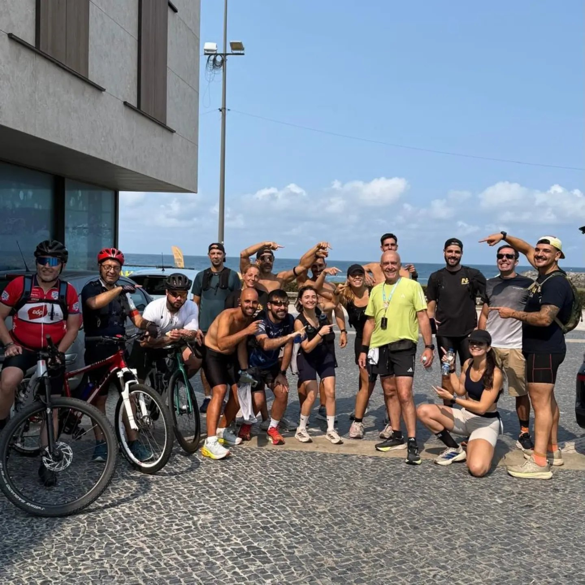
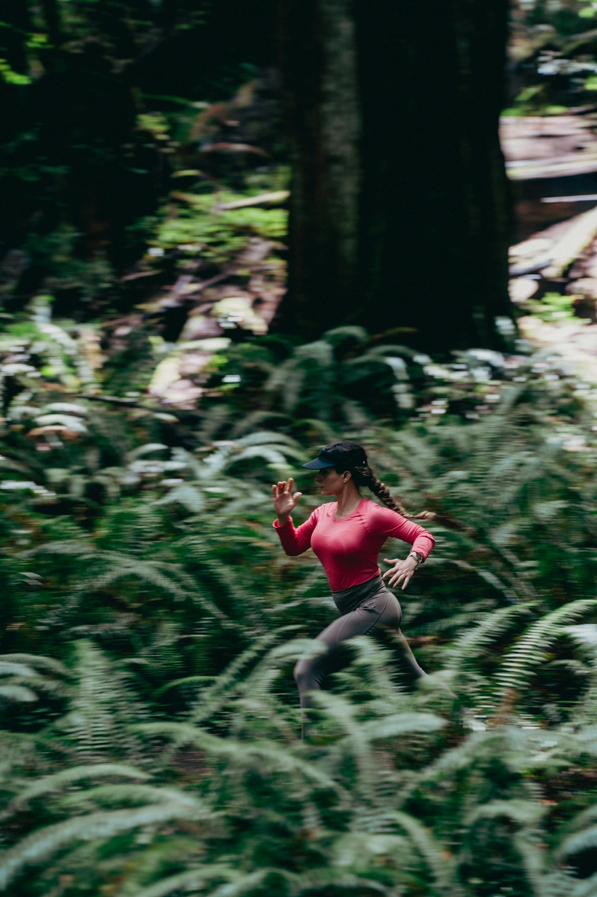

Banda iliotibial
Dor na lateral do joelho, muito comum em corredores e ciclistas.
26 anos de experiência em quiropatia e medicina desportiva. Para quem quer treinar mais, recuperar melhor e ficar longe das lesões.
Um pequeno desequilíbrio pode sobrecarregar joelhos, ancas e até a coluna. Como quiropata e massagista desportivo, atuo de forma integrada para tratar a causa — não só o sintoma.
Dor na lateral do joelho, muito comum em corredores e ciclistas.
Dor na lateral do tornozelo — frequente em quem corre ou passa muito tempo em pé.
Das lesões mais comuns no atletismo, sobretudo no posterior da coxa e nos gémeos.
Lesão do ombro tratada com eletroestimulação para estimular a recuperação e controlar a dor.
Posturas exigentes — no selim, na mota ou no treino — acumulam tensão na coluna.
Correr em terrenos variados aumenta o risco de entorses e de lesões musculoesqueléticas.
“Cuida do teu corpo como cuidas do teu treino.” — Ricardo Lento

Mais um ano a apoiar a equipa. “Somos Maiatos | Somos Ricardo Lento.”
Colaboração com o clube ao longo da carreira, no tratamento e prevenção de lesões.
Parceria renovada como especialista em quiropraxia.
Como o triatleta que, a duas semanas do Half Ironman, veio prevenir lesões com libertação miofascial.
